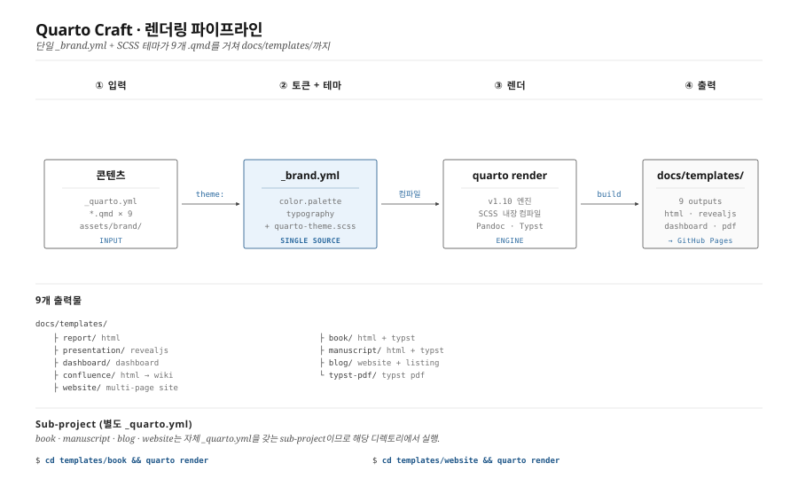
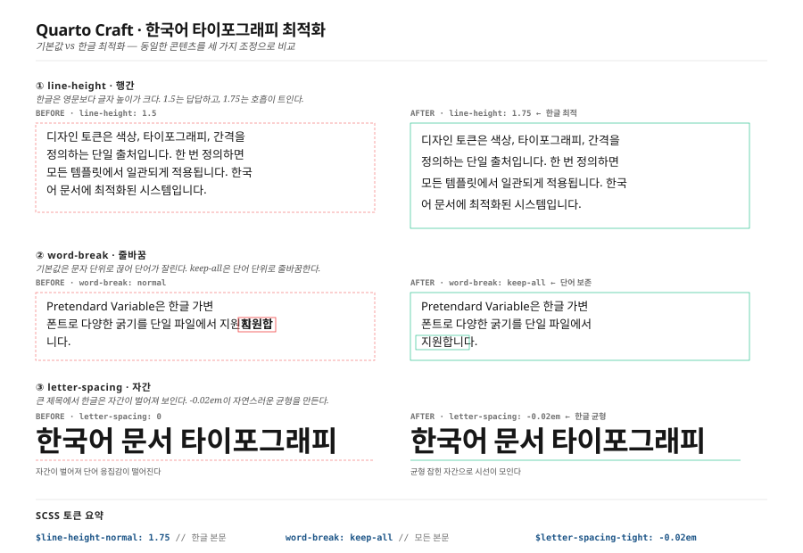

Typst PDF 북 만들기
Typst
PDF
Book
Quarto 1.9+의 Typst 기반 PDF 북 기능을 소개합니다

Quarto 1.9의 새 기능
Quarto 1.9부터 Typst 기반의 멀티 챕터 PDF 북을 공식 지원합니다.
LaTeX 대비 Typst의 장점
| 항목 | LaTeX | Typst |
|---|---|---|
| 컴파일 속도 | 느림 | 매우 빠름 |
| 한국어 지원 | 패키지 필요 | 기본 지원 |
| 문법 | 복잡 | 간결 |
한국어 조판 최적화
Quarto Craft는 Typst 출력에서도 한국어 가독성 규칙을 적용합니다 — linestretch: 1.5 행간, Pretendard 폰트, D2Coding ligature 코드 폰트.

설정 예시
format:
typst:
lang: ko
mainfont: "Pretendard"
toc: trueHTML 웹북과 Typst PDF를 동시에 생성하려면 downloads: [pdf]를 _quarto.yml에 추가하면 됩니다.